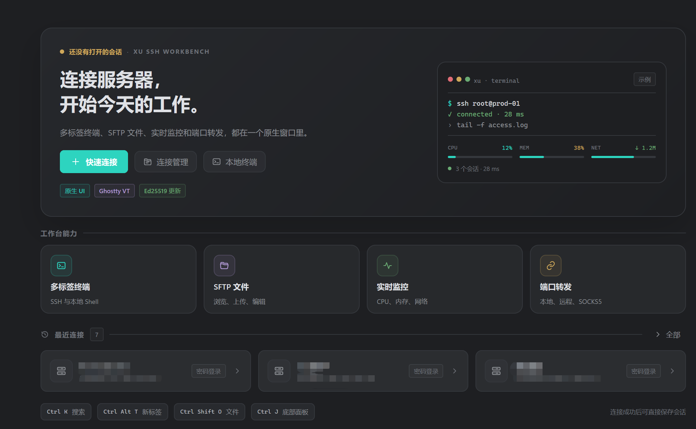

多标签终端
SSH 与本地 Shell 共用标签栏，同一台服务器可以开多个会话。查找、清屏、断线重连都在标签菜单里。
SSH 与本地 Shell 共用标签栏，同一台服务器可以开多个会话。查找、清屏、断线重连都在标签菜单里。
在底部面板浏览远端目录，上传、下载、新建、重命名、删除和远程编辑。面板高度可拖动，双击分隔条复位。
CPU、内存、交换、网络、延迟、磁盘和进程常驻左侧。收起后保留侧边展开栏，随时拉回。
本地转发、远程转发与 SOCKS5 三种方式，在「隧道」面板里统一管理。
在多台已保存的主机上执行同一条命令，不必逐个开终端。
617 套 Ghostty / iTerm2 终端配色。内置通用、Nginx、JSON 日志规则，也可以写自己的正则与关键字。
快速连接、最近连接和连接管理器都在首页。连接过程以终端样式显示 TCP、加密协商、认证和打开终端的真实阶段与耗时。

单文件便携版，终端引擎与会话库都封装在 exe 里。另有 NSIS 安装包：安装到本机、创建开始菜单快捷方式并支持卸载。
Intel 与 Apple Silicon 通用镜像。下载 .dmg 后打开，把 Xu 拖进「应用程序」即可。
提供 .deb、tar.gz 和 PKGBUILD。也可以用安装脚本自动识别平台与架构，下载并安装最新版本。
curl -fsSL https://github.com/wlj521/xu/releases/latest/download/install.sh | sh
从 v0.1.1 起支持自动更新，安装包使用 Ed25519 签名校验。所有版本的 SHA256 / MD5 校验文件都在 GitHub Releases。